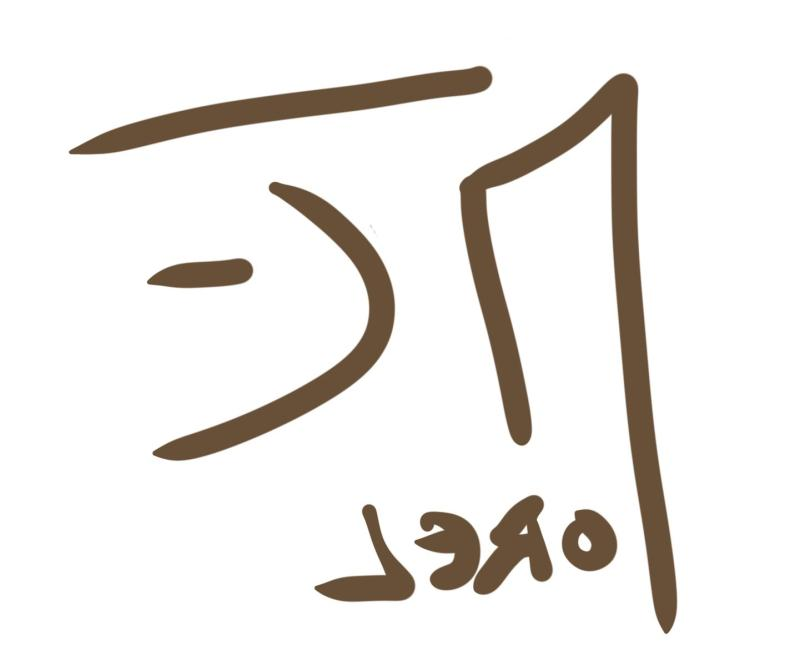

EXPÉRIENCES
Expert Sécurité
Verisure - Janvier 2018 à janvier 2020 - CDI
- Réaliser une expertise sécurité
- Anayser les besoins
- Réaliser l'installation et la programmation du système de sécurité
- Suivre et entretenir la satisfaction clientèle (contact régulier avec le listing client, réaliser les maintenances)
- Etre l'interlocuteur unique entre le client et la société
Service Volontaire International
Maison des associations - Octobre 2017 - Bénévolat - Chișinău - Moldavie
- Création d'activités au sein d'un centre pour enfants en situation de han
Assistant Chef de projet web
Chapristi - Octobre 2015 à juin 2016 - Alternance - Lille - France
- Conception de projet
- Suivi de projet
- Accompagnement dans les étapes de production
- Intégration de contenus sur les projets à décliner à l'international
- Suivi des demandes d'ajustements et correctifs clients
- Documents de conception formalisés (arborescence, wireframes)